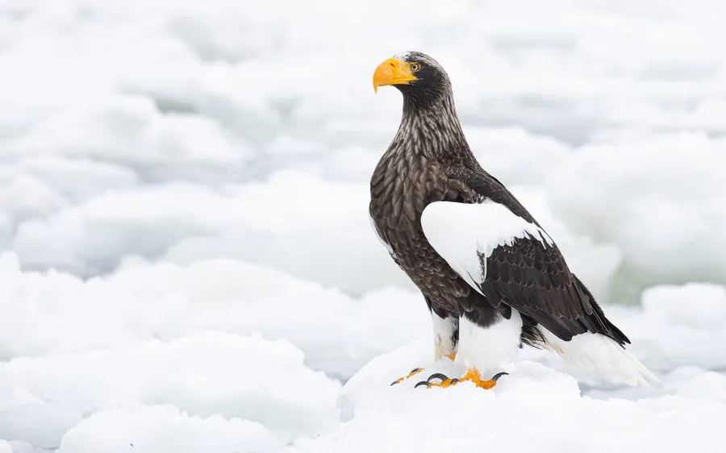

鸟类 · 动物界
虎头海雕 Haliaeetus pelagicus

体形最重的海雕之一，通体黑褐色、肩部有醒目白斑，喙巨大而橙黄，繁殖于俄罗斯远东、冬季到日本和中国东北越冬。
- 分类
- 门脊索动物门纲鸟纲目鹰形目科鹰科属海雕属
- 栖息环境
- 沿海、河口、湖泊与结冰的海岸，繁殖期在悬崖或高大乔木上营巢
- 地理分布
- 俄罗斯远东、日本北海道和朝鲜半岛，中国东北偶有越冬记录
- 保护级别
- IUCN 易危（VU）；中国国家一级保护动物
物种志
虎头海雕体长 85–105 cm，体重 4.9–9 kg，翼展 195–250 cm，是体形最重的海雕之一。成鸟全身黑褐色，肩部和尾部有大块醒目的白色斑，头部和颈部颜色较浅，喙巨大而呈橙黄色，腿黄色。它的体形粗壮，喙的尺寸在猛禽中名列前茅。
虎头海雕繁殖于俄罗斯远东的堪察加半岛、黑龙江下游和萨哈林岛，冬季南迁到日本北海道、千岛群岛和朝鲜半岛，中国东北偶有越冬记录。它们以鱼为主食，尤其喜欢鲑鱼，也捕食水鸟、海豹幼崽和腐肉，常在水面上空盘旋或在冰面上等待。繁殖期在悬崖或高大乔木上筑大型巢，每窝产卵 1–3 枚，孵化约 35–40 天。由于栖息地变化和食物减少，全球种群数量有限，被列为易危物种，中国将其列为国家一级保护动物。
形态与习性
- 食性鲑鱼等鱼类为主，也吃水鸟、海豹幼崽和腐肉
- 体长85–105 cm
- 体重4.9–9 kg
- 翼展195–250 cm
- 繁殖每窝 1–3 枚卵，孵化约 35–40 天
- 寿命野外约 20–25 年
- 喙巨大而橙黄，是猛禽中尺寸最大的喙之一
趣味知识
- 虎头海雕的喙巨大而橙黄，是猛禽中尺寸最大的喙之一。
- 它通体黑褐、肩部有白色大斑，在猛禽中十分独特。
- 虎头海雕冬季常在结冰的海面上等待鲑鱼，也会捡食渔民丢弃的鱼。
- 它是体形最重的海雕之一，体重可接近 9 kg。